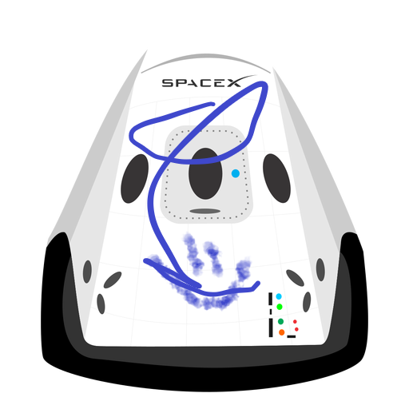

Hyperblog
Tu blog de cabecera
Este es el título atractivo e interesante del post
Y este es el parrafo de inicio donde vamos a explicar las cosas increéibles que se pueden hacer con ramas

Los blogs son la mejor forma de compartir informacion y tus ideas... Mucho mas que ir a conferencias o salir a Youtube, exepto si eres un rockstar pero estadisticamente no lo eres... por ahora.